One Dashboard for Every Tour Request
Austrip is an Israeli company running tours across Austria and its neighbors. After I redesigned and rebuilt their booking site (see the Austrip case study), I started thinking about the other side of it: the people who answer every booking, every hotel quote and every taxi order.
I found a small team juggling three tools. Bookings live in Checkfront, the site lives in WordPress, and changing a price or a photo means waiting for an outside developer. I decided to design one dashboard that brings all of it together.
Problem
Tour bookings, hotel quotes, taxi orders and contact forms arrive in different places, nothing shows what still needs an answer, and every change on the site needs a developer.
Solution
One dashboard: every form on the site lands in one inbox, a request becomes a booking in one click, and bookings and taxi rides share one calendar.
Impact
The team owns the site. Prices, photos, schedules and tour texts are edited in the dashboard, and "Save & publish" updates the live tour page.
Role UX/UI design, built in code · Tools Figma, Claude · Platform Web + mobile, Hebrew (RTL)
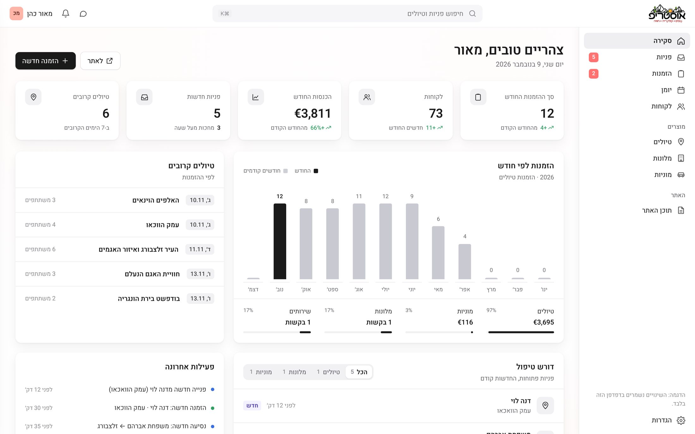
A calmer way to run tours
I designed and built an admin dashboard for the Austrip team, with the long term goal of replacing Checkfront altogether.
The main goals were quite simple:
- One inbox for every form on the site
- Turning a request into a booking in one click
- Tours and taxi rides on one calendar
- Letting the team edit the site without a developer
Before drawing anything
I started by writing down what the problem is, who we are building for, and what has to happen for the dashboard to succeed.
The problem: every request from the site, a tour booking, a hotel quote, a taxi or a service form, lands in email. There is no single place to see what is new, what is in progress and what is closed.
The persona: the Austrip operator. The business owner plus one employee in high season, working from the office computer and from the phone on the road. 20 to 40 requests a week in season, some of them urgent, like a taxi tomorrow morning. Not technical, and measures success by response time and closed bookings.
Then I sorted pains, needs and ideas on sticky notes. Requests get lost in email, nobody knows who already answered a customer, and a price update needs a developer. That led to one question that guided the whole project:
How might we help the owner know, within 10 seconds, what needs attention today?
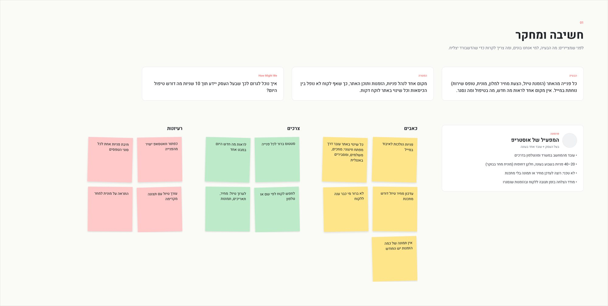
What already exists
I looked at what the team uses today and what the market offers. Checkfront and Bokun handle bookings and availability well, but they are built for bigger companies, in English, and look nothing like the site. FareHarbor has a clear calendar but a lot of screens. Excel or Monday are flexible and cheap, but every update is manual and not connected to the site. And WordPress manages content, but knows nothing about bookings or requests.
That gave me a clear position: as simple as a spreadsheet, connected to the site, in Hebrew and RTL, and built around requests, not only bookings.
Next I mapped the customer journey from finding the site to leaving a review, side by side with what the owner does at each step. Each frustrating moment turned into an answer the dashboard should give: an automatic "we got your request" email, requests waiting over an hour rising to the top, a quote that becomes an "approve and pay" link, and a "taxis tomorrow" card on the home screen.
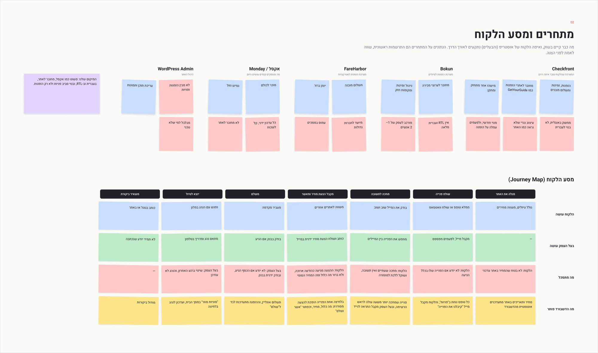
Everything the system needs to do
I broke the product into twelve modules, from the overview and the inbox to tours, bookings, customers, the calendar, reviews, site content, English translation and settings. The color of each note marks its priority: yellow is a must for the first version, green is phase two, and pink is an idea for the future.
This is what kept the scope honest. The first version focuses on requests, bookings, tours and site content, and leaves things like auto replies and payment links for later.
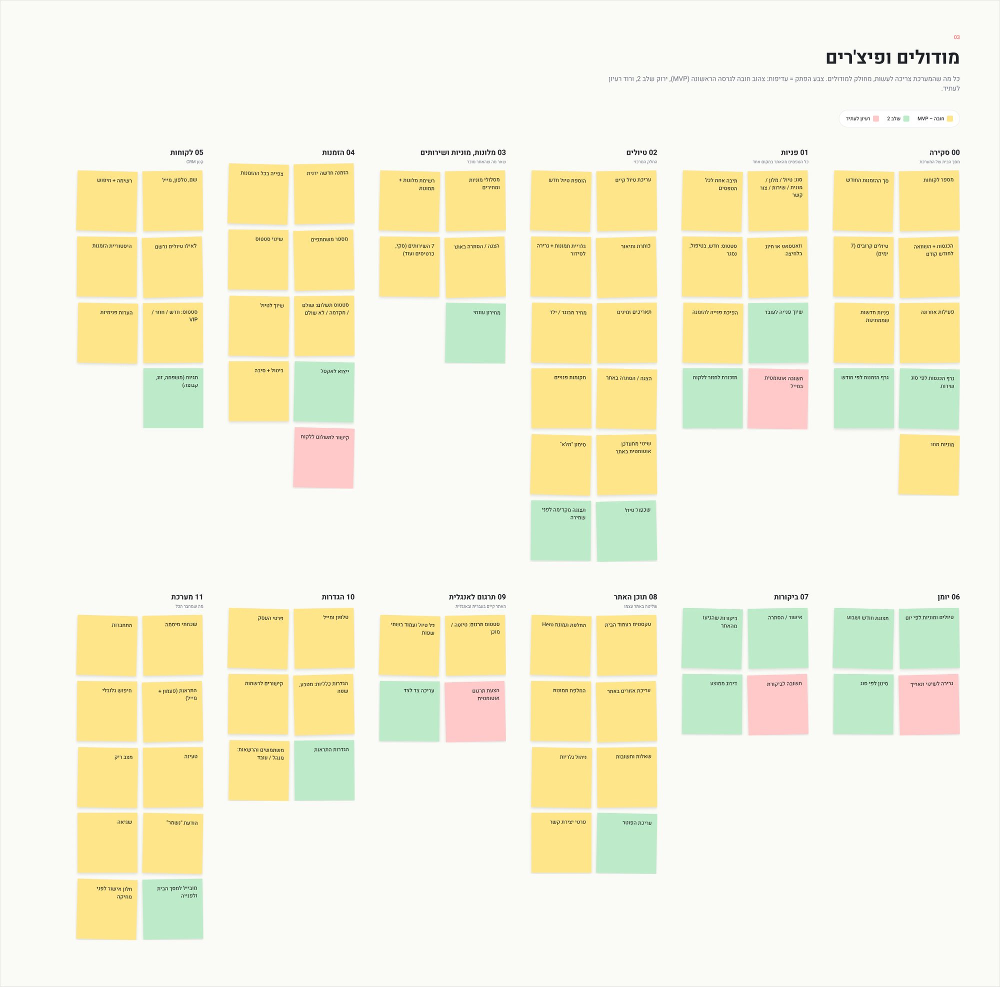
Mapping the structure
With the modules in place I drew the sitemap: what lives in the dashboard and how you get to each part. Then I followed one request from the moment a customer sends a form until the booking is closed.
The flow taught me something simple: the most common actions, calling the customer and changing the status, should be buttons inside the request itself, not somewhere in the menu.
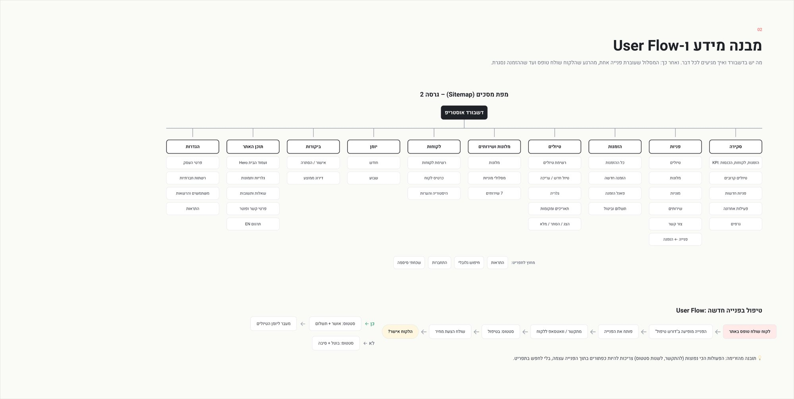
Structure before color
The sketches are black and white on purpose, so the only thing to judge is structure and priority. I tried two directions for the overview:
Direction A: numbers first
Four KPI cards on top, with "needs attention" and a chart below. It shows the state of the business, but the action only starts in the bottom half.
Direction B: requests first
The waiting requests are the first thing you see, and the numbers move to the side. I chose this one because it answers the How Might We question directly.
I also sketched the bookings list, a single request in a side panel, and the tour editor.
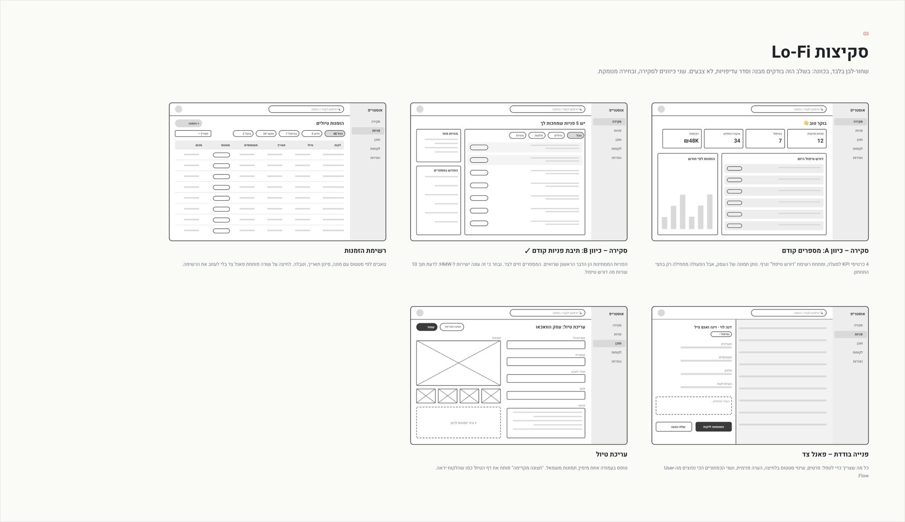
A small design system
Before the final screens I built a small system in Figma: colors as variables, Heebo text styles, a 4px spacing scale, icons, and components with Auto Layout and variants. Every final screen is built only from these pieces.
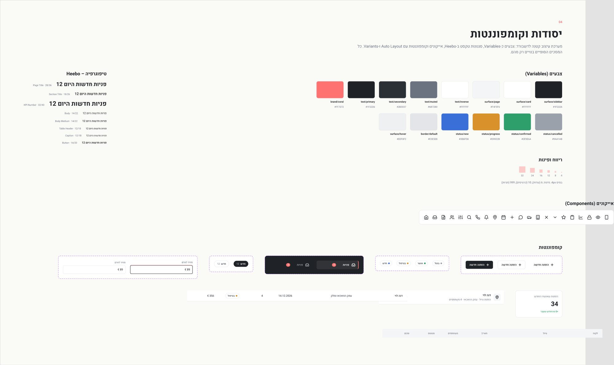
Quiet by design
A dashboard is used for hours every day, so it should stay calm. White surfaces separated by soft shadows, a subtle warm gradient in the background and one neutral icon color. Color shows up only where it carries meaning, the status of a request:
What changed along the way
- The "numbers first" overview was replaced with "requests first", straight from the sketches.
- Charts, upcoming tours and recent activity were added back at the owner's request.
- Requests got their own screen, separate from tour bookings.
- Early versions used tinted cards and colored tags. I took the color away and kept it only for status.
I designed the screens in Figma first, then built them in code with Claude.
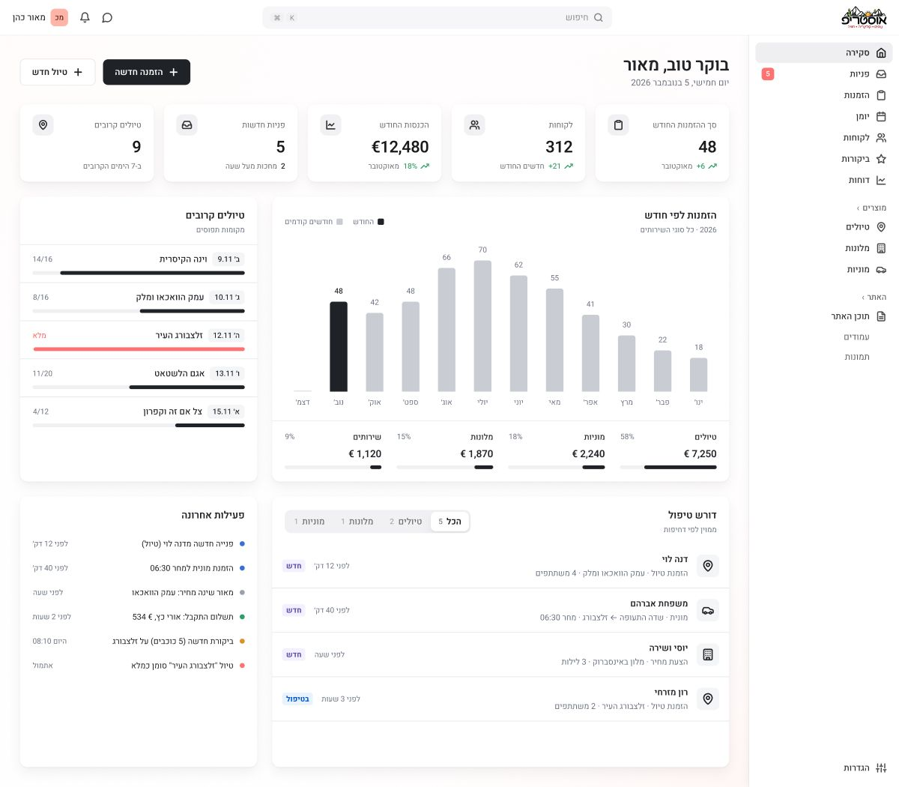
Starting the day with clarity
The first screen answers two questions: what do I need to handle now, and how is the month going.
Stat cards
Five small cards on top, with the icon in one neutral color on the same row as the title.
Bookings by month
A simple chart where the current month stands out in black.
Upcoming tours and open requests
What is coming up next, and what is still waiting for an answer, filtered by type.
Recent activity
A short feed of what changed, so nobody has to ask.
Every request in one list
Every form on the site, from a tour booking to a hotel quote or a taxi from the airport, arrives in one inbox. Segmented tabs filter by type, and a request opens right next to the list: the details on top, the customer's own message in its own box, and the next step as one button, "Convert to booking" or WhatsApp.
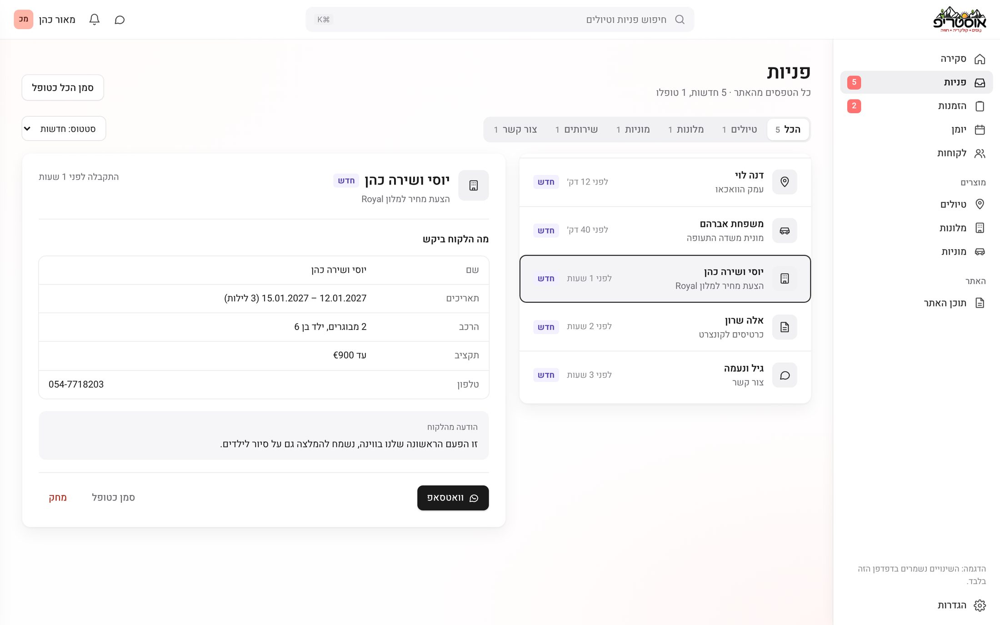
Bookings without leaving the list
Bookings are a table with status tabs and a count on each one. A new booking, or the details of an existing one, opens in a side panel, so the list stays in view.
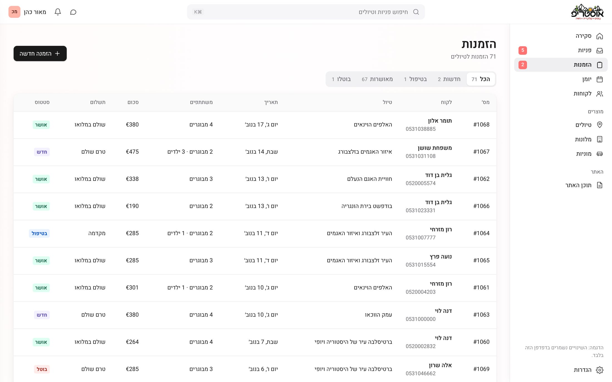
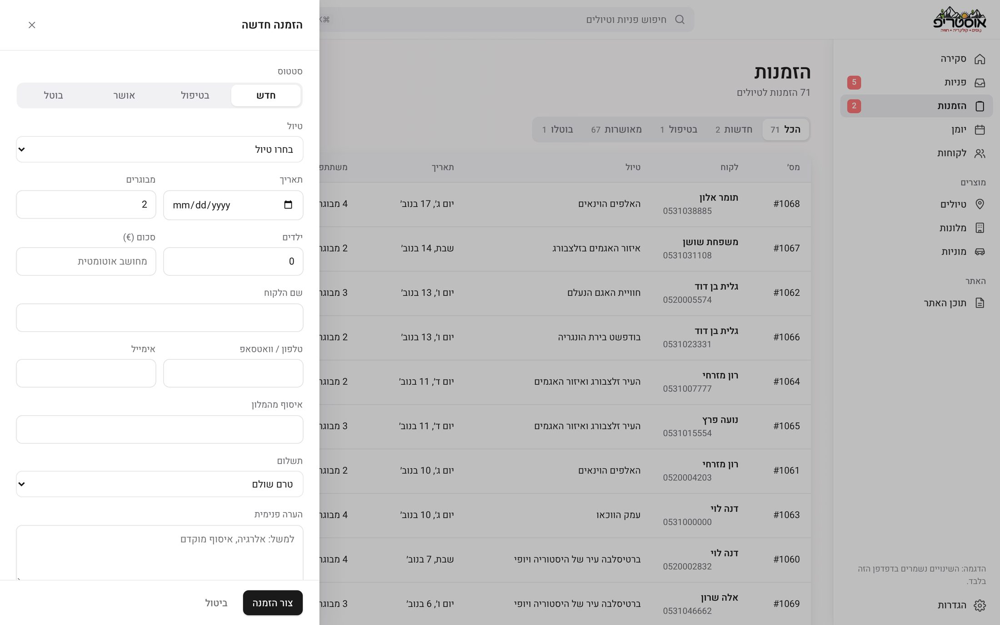
One page, no tabs
Editing a tour is a single scrolling page that follows the tour page itself: details, schedule, highlights, what's included, gallery and "Good to know". Photos and the publish status sit on the side, and "Save & publish" updates the live tour page.
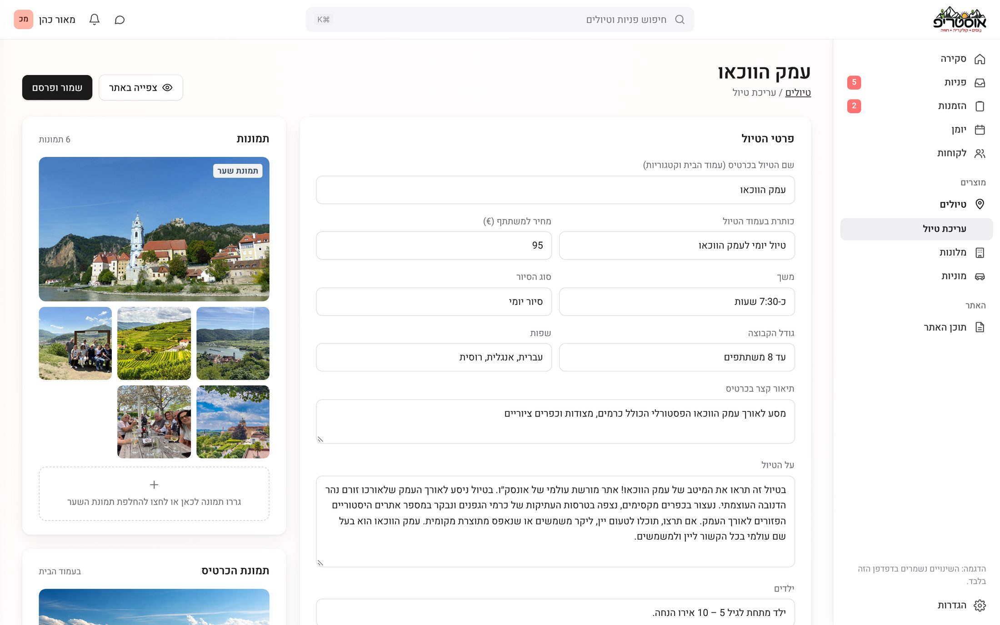
On the tours list, a category filter narrows things down and one switch shows or hides a tour on the site.
Hotels and taxis
The rest of what the site sells has its own screens. Hotels are cards with their photo, stars and open quote requests. Taxi rides are a short list with route, time, passengers and price.
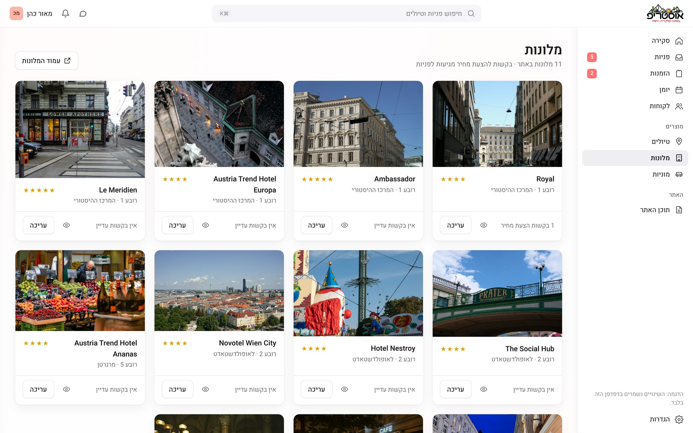
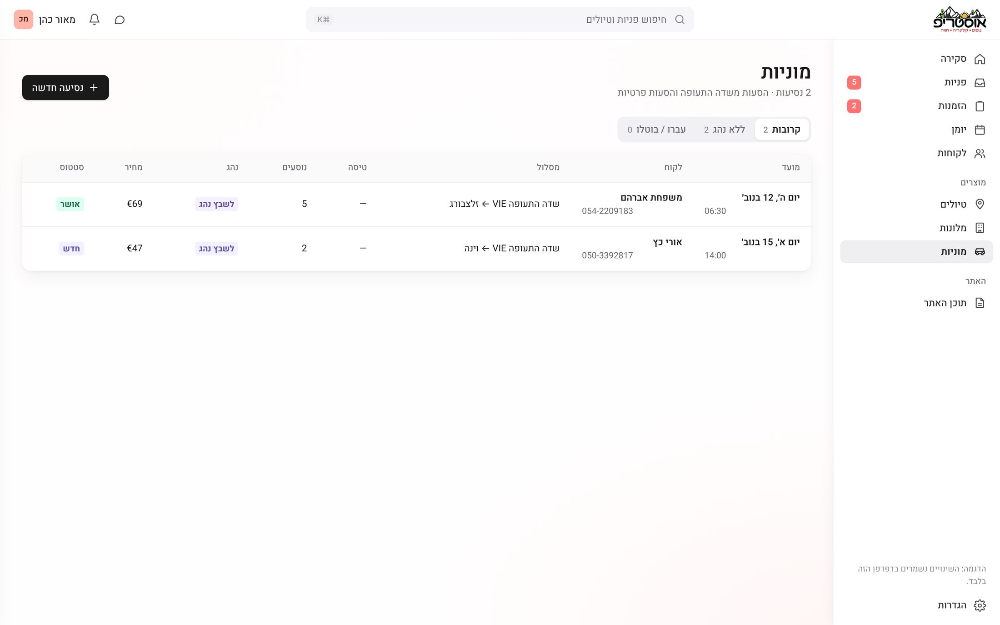
The team owns the site
This was the biggest pain from the research: every change went through a developer. In "Site content" the team picks a page and edits its texts and images next to a live preview of the real site.
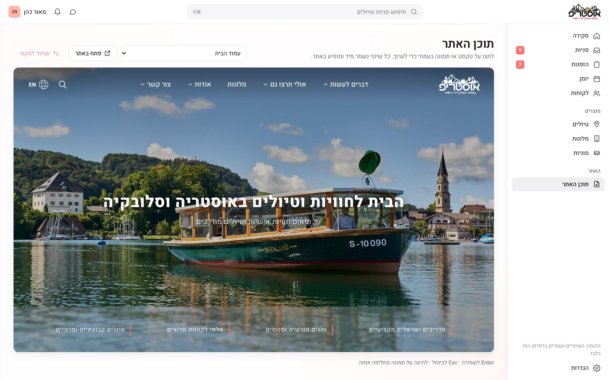
A small CRM
Every customer who booked or asked for something is saved with their phone, email, bookings and total. Tabs split new and returning customers, search works by name or phone, and the list exports to CSV.
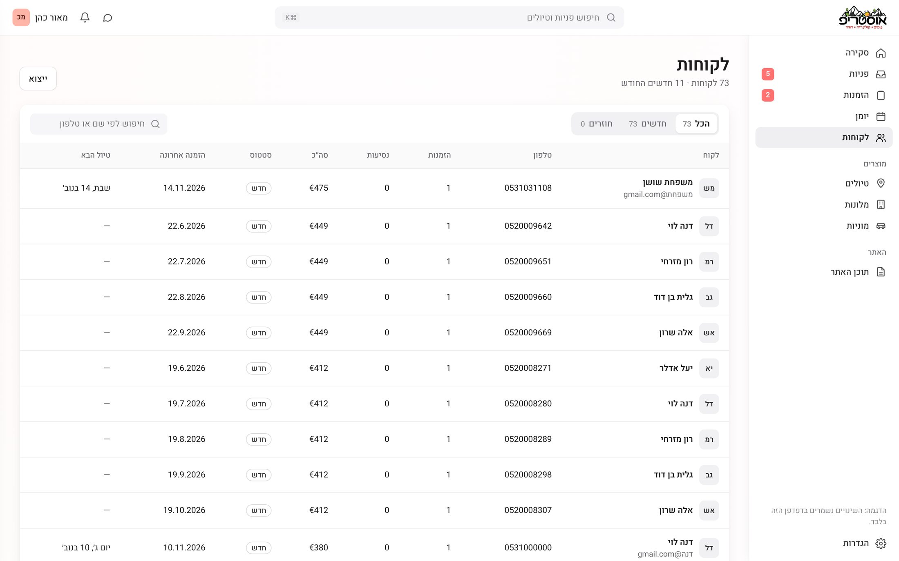
Tours and taxis at a glance
The month view puts tours in solid black and taxi rides in an outline, so the two read apart without adding more colors. Clicking a day opens everything planned for it, and a new booking can be added from there.
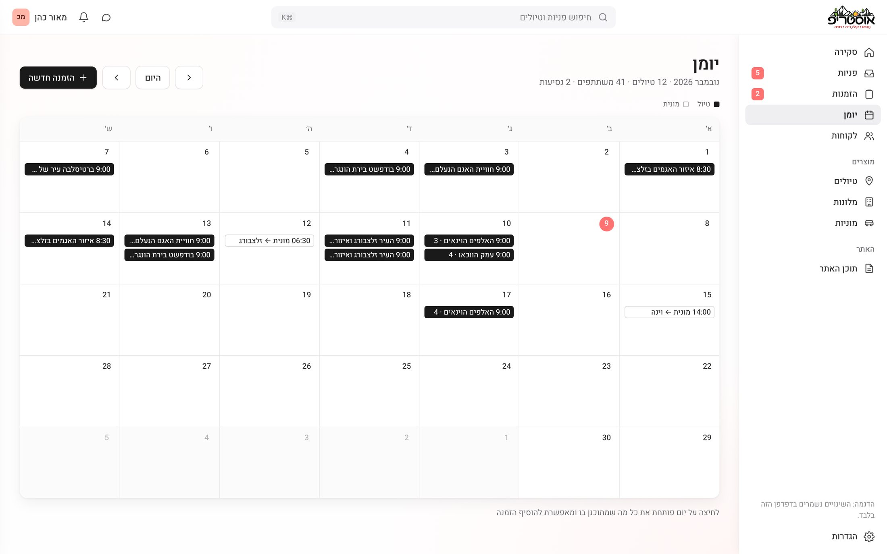
Empty, loading, error, and on the road
A finished product also needs the in-between moments. I designed what you see when there is no data yet, while something loads or fails, a "saved" toast with undo, and a confirmation before anything that can't be undone. Plus a login screen, and two mobile screens for the owner on the road: the overview and a single request with a WhatsApp button.
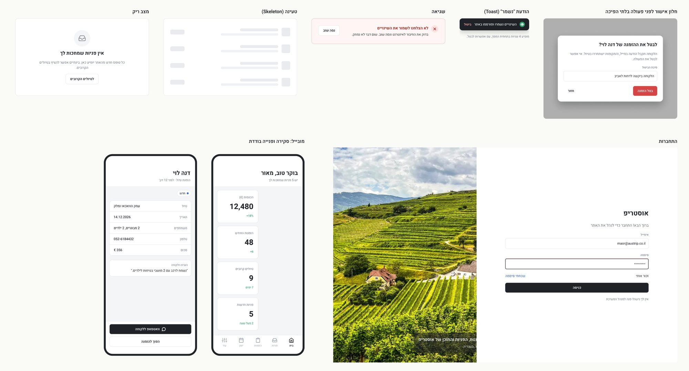
What I learned
Two audiences, one product. A booking site serves travelers, and also the team that answers them. Designing the dashboard changed how I shaped every form on the site: each one now sends exactly what the team needs to reply.
Calm beats colorful. Taking color away and keeping it only for status made the important things stand out on their own.
Empty is a real state. Without demo data, every screen had to explain itself when it was empty and still look finished.
What's next
The goals I set: answer every request in under an hour, zero forgotten requests, and updating a tour on the site in under two minutes, without a developer. Next on the roadmap are a mobile app for the owner, online payment from inside a booking, monthly email reports and a Google Calendar sync. Before that, I planned a usability test with three people who run tour or customer businesses.
Where design actually helps
This project was about the people behind the site. When the team can see everything in one place and change the site on their own, they get time back for what they actually do: taking care of travelers.